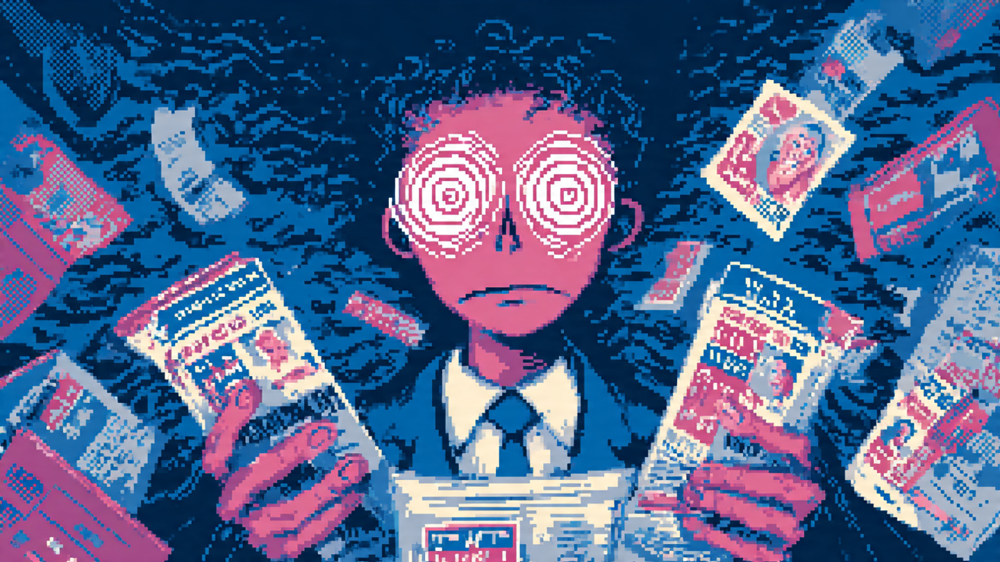
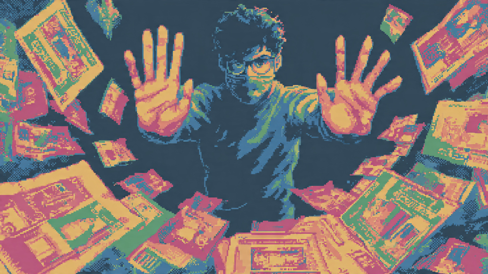

MAPA_DE_DOLORES_V.1

[ ERROR_01 ]
Información política extensa y desordenada desde el inicio.
>>
[ ERROR_02 ]
Dificultad para procesar y falta de jerarquía informativa.
>>

[ ERROR_03 ]
Pérdida de interés rápida por falta de valor inmediato.
>>
[ ERROR_04 ]
Duda constante sobre la veracidad de la información.